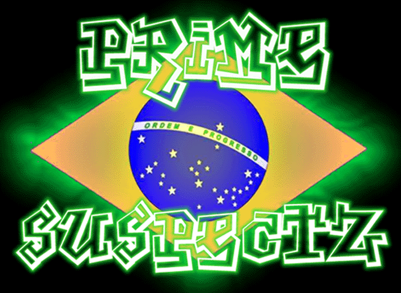

Sony India was hacked!!
Microsoft win2k is a piece of cake.
"Whats is wrong with microsoft?...
if they
cant secure them selfs, imagine
the others."
Greetz: Crime
Boys, IZ c0rp, McM4nus, data cha0s,
pr0phet, supreme
entity, no|d, WoH, f0ul.
psuspectz@mail.com
"/%$!#@